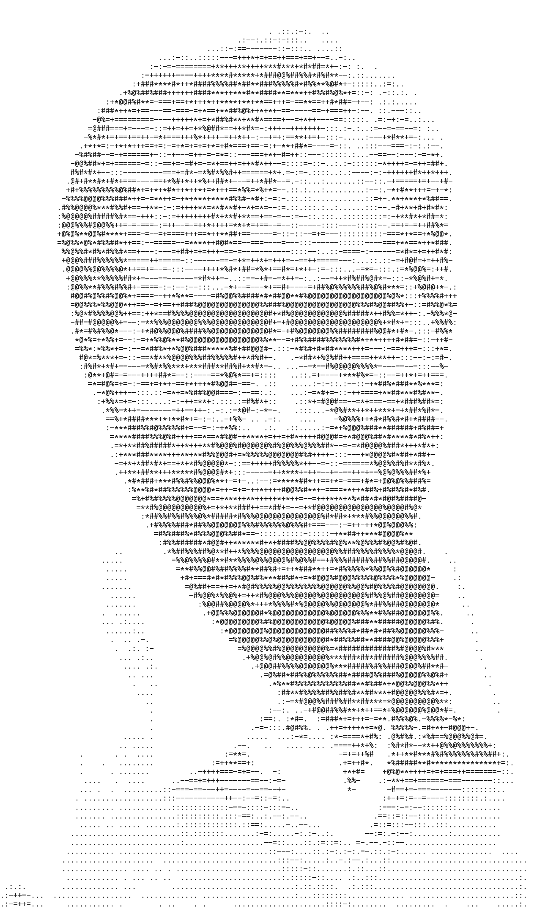

About
A short piece of interactive fiction in the Playfic tradition, but with no parser to learn. Type what you'd do or say, in your own words.
A small language model runs in your browser to work out what you meant. It never writes anything. Every line in the story was written by hand.
Some things he'll only tell you if you ask again, or say "go on". Type "help" if you're stuck.